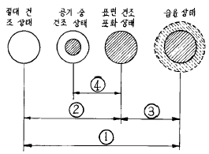
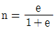
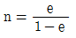
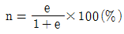
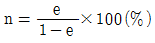
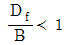
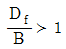
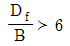
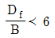

건설재료시험기능사 (2003-01-26 기출문제)
1과목: 건설재료
1. 동일한 목재일 때 다음 강도 중 가장 큰 것은?
- 종압축강도
- 횡압축강도
- 전단강도
- 종인장강도
(정답률: 53%)

2. 융해점이 높고 감온비가 작으며 내구성,내충격성이 크고, 플라스틱한 성질을 가지며 탄력성이 강한 아스팔트는?
- 천연 아스팔트
- 블로운 아스팔트(blown asphalt)
- 스트레이트 아스팔트(straight asphalt)
- 레이크 아스팔트(lake asphalt)
(정답률: 58%)
3. 다이너마이트의 주성분은?
- 칼릿
- 규조토
- 염소산암모늄
- 니트로글리세린
(정답률: 87%)
4. 채석장, 노천굴착, 대발파, 수중발파에 가장 알맞는 폭약은?
- 칼릿(carlit)
- 흑색화약
- 니트로글리세린
- 규조토다이너마이트
(정답률: 70%)
5. 골재의 함수상태를 나타낸 그림에서 유효 흡수량은?

- ①
- ②
- ③
- ④
(정답률: 73%)
6. 잔골재의 실적률이 75%이고 비중이 2.65일 때 빈틈율은?
- 28%
- 25%
- 66%
- 3%
(정답률: 68%)
7. 시멘트의 응결에 관한 다음 설명 중 옳지 않은 것은?
- 물의 양이 많은 경우나 시멘트가 풍화되었을 경우 일반적으로 응결이 늦어진다.
- 분말도가 높으면 응결이 늦어진다.
- 응결시간 측정법에는 길모어침에 의한 방법이 있다.
- 온도가 높고 습도가 낮으면 응결이 빨라진다.
(정답률: 57%)
8. 수화열을 적게 하기 위하여 규산삼석회와 알루민산삼석회의 양을 제한해서 만든 것으로 건조수축이 적으므로 단면이 큰 콘크리트용으로 알맞는 시멘트는?
- 조강 포틀랜드 시멘트
- 슬랙 시멘트
- 백색 포틀랜드 시멘트
- 중용열 포틀랜드 시멘트
(정답률: 62%)
9. 계면 활성작용에 의하여 워커 빌리티와 동결 융해 작용에 대한 내구성을 개선시키는 혼화제는?
- AE제, 감수제
- 촉진제, 지연제
- 기포제, 발포제
- 보수제, 접착제
(정답률: 86%)
10. 콘크리트 배합설계에서 단위시멘트량이 300㎏,단위수량이 150㎏일 때 물-시멘트비는 얼마인가?
- 45%
- 50%
- 52%
- 55%
(정답률: 92%)
11. 레디믹스트 콘크리트의 좋은 점에 관한 설명 중 옳지 않은 것은?
- 콘크리트의 워커빌리티(Workability)를 즉시 조절하기가 용이하다.
- 균질의 콘크리트를 얻을 수 있다.
- 현장에서 콘크리트 치기와 양생만 하면 된다.
- 넓은 장소가 필요 없고 공사기간이 단축된다.
(정답률: 52%)
12. 일반적인 석재의 비중은 얼마 정도인가?
- 2.15
- 2.25
- 2.45
- 2.65
(정답률: 52%)
13. 재료에 하중이 오랫동안 작용하면 하중이 일정한 때에도 시간이 지남에 따라 변형이 커지는 현상은?
- 크리프
- 피로
- 인성
- 취성
(정답률: 93%)
14. 콘크리트에 AE제를 사용하였을 때 장점에 해당되지 않는 것은?
- 위커빌리티가 좋다.
- 동결, 융해에 대한 저항성이 크다.
- 강도가 커지며 철근과의 부착강도가 크다.
- 단위수량이 줄고 수밀성이 크다.
(정답률: 60%)
15. 아스팔트의 신도 시험에 관한 내용 중 틀린 것은?
- 물의 온도를 25± 0.5℃ 로 유지한다.
- 매분 5± 0.25㎝ 의 속도로 시료를 잡아당긴다.
- 시료가 끊어 질 때까지 늘어난 길이를 ㎜단위로 표시한다.
- 아스팔트의 늘어나는 능력을 신도라 한다
(정답률: 58%)
16. 다음 중 시멘트의 분말도를 구하는 시험방법은?
- 블레인 시험
- 비이커 시험
- 오오토 클레이브 시험
- 길모아 시험
(정답률: 49%)
17. 다음 중 골재의 단위무게 시험방법이 아닌 것은?
- 충격을 이용하는 방법
- 다짐대를 사용하는 방법
- 삽을 이용하는 방법
- 무게에 의한 측정법
(정답률: 37%)
18. 로스앤젤레스 시험기로 닳음(마모)시험을 할 때 E,F,G급회전수를 표시한 것 중 옳은 것은?
- 매분 18∼25번 1,000회
- 매분 30∼33번 1,000회
- 매분 30∼33번 10,000회
- 매분 36∼40번 10,000회
(정답률: 74%)
19. 콘크리트의 비파괴시험에서 일정한 에너지의 타격을 콘크리트 표면에 주어 그 타격으로 생기는 반발력으로 콘크리트의 강도를 판정하는 방법은?
- 보울트를 잡아당기는 방법
- 코어채취 방법
- 표면경도 방법
- 음파측정 방법
(정답률: 68%)
20. 콘크리트 슬럼프 시험을 할때 슬럼프 코운에 시료를 채우고 벗길때 까지의 전작업 시간은 얼마이내로 하여야 하는가?
- 5초
- 30초
- 1분
- 2분30초
(정답률: 72%)
2과목: 건설재료시험
21. 아스팔트 침입도는 표준침의 관입 저항으로 측정하는것인데, 시료중에 관입하는 깊이를 얼마 단위로 나타내는가?
- 1/10mm
- 5/10mm
- 1/100mm
- 1mm
(정답률: 83%)
22. 보통 흙의 비중이라 하면 증류수 몇 ℃의 것에 대한 값을 표준으로 하는가?
- 4℃
- 10℃
- 15℃
- 20℃
(정답률: 57%)
23. 시멘트 몰탈의 인장강도 시험을 실시하기 위한 장치가 아닌 것은?
- 천칭
- 표준체
- 메스실린더
- 스프레이 노즐
(정답률: 45%)
24. 콘크리트 슬럼프 시험에서 굵은 골재의 크기가 최소 몇 mm이상인 경우에는 적용할 수 없는가?
- 25mm
- 50mm
- 70mm
- 100mm
(정답률: 63%)
25. 두꺼운 불투명 유리판위에 시료를 손바닥으로 굴리면서 늘렸을 때 지름 3mm에서 부스러질 때의 함수비를 무엇이라 하는가?
- 수축한계
- 액성한계
- 유동한계
- 소성한계
(정답률: 72%)
26. 모르타르(mortar) 인장강도 시험시 하중을 가하는 부하속도에 해당하는 것은?
- 95 ± 10kgf/min
- 160 ± 10kgf/min
- 270 ± 10kgf/min
- 350 ± 10kgf/min
(정답률: 48%)
27. 골재의 안정성 시험에 사용하는 시약은?
- 황산나트륨
- 수산화칼륨
- 염화칼슘
- 황산알루미늄
(정답률: 68%)
28. 흙의 입도시험을 하기 위하여 40%의 과산화수소 용액 100g을 8%의 과산화수소수로 만들려고 한다. 물의 양은 얼마나 넣으면 되는가?
- 400g
- 300g
- 200g
- 100g
(정답률: 45%)
29. 흙의 비중시험에서 흙과 증류수를 비중병에 넣고 끓이는 이유로 맞는 것은?
- 흙입자를 분리시키기 위해서이다.
- 기포를 제거시키기 위해서이다.
- 불순물을 분리시키기 위해서이다.
- 흙의 입도를 좋게하기 위해서이다.
(정답률: 80%)
30. 시멘트의 응결시간 시험방법에서 비카장치에 의한 방법은 시멘트풀을 만들때 시멘트 몇 g을 시료로 사용하는가?
- 100g
- 200g
- 300g
- 500g
(정답률: 39%)
31. 굵은 골재의 최대치수는 무게비로서 몇％ 이상을 통과 하는 체들 가운데에서 가장 작은 치수의 체눈을 체의 호칭치수로 하는가?
- 60％
- 70％
- 80％
- 90％
(정답률: 79%)
32. 평판재하시험에서 규정된 재하판의 치수가 아닌 것은?
- 30㎝
- 40㎝
- 50㎝
- 75㎝
(정답률: 62%)
33. 콘크리트의 블리딩에 대한 설명 중 옳지 않은 것은?
- 콘크리트의 재료 분리의 경향을 알 수 있다.
- 블리딩이 심하면 콘크리트의 수밀성이 떨어진다.
- 분말도가 높은 시멘트를 사용하면 블리딩을 줄일 수 있다.
- 일반적으로 블리딩은 콘크리트를 친 후 10∼12시간이면 거의 끝난다.
(정답률: 74%)
34. 콘크리트의 배합 설계 방법에서 가장 합리적인 방법은?
- 배합표에 의한 방법
- 계산에 의한 방법
- 시험 배합에 의한 방법
- 현장 배합에 의한 방법
(정답률: 41%)
35. 분말도에 대한 설명중 틀린 것은?
- 분말도가 높으면 수화작용이 빠르다.
- 분말도가 높으면 조기강도가 커진다.
- 비표면적을 나타낸다.
- 입자가 굵을수록 분말도가 높다.
(정답률: 78%)
36. 콘크리트 인장강도 시험에서 공시체의 습윤양생 온도는 어느 정도로 하면 적당한가?
- 15± 3℃
- 20± 3℃
- 25± 3℃
- 30± 3℃
(정답률: 57%)
37. 연화점 시험에서 시료가 강구와 함께 어느 정도 처졌을때를 연화점으로 하는가?
- 6.8 mm
- 12.2 mm
- 25.4 mm
- 27.6 mm
(정답률: 80%)
38. 골재의 함수상태중 표면건조 포화상태란?
- 골재알의 속이 물로 차 있고 표면에도 물기가 있는 상태이다.
- 골재알 속의 일부에만 물기가 있는 상태이다.
- 골재 알의 표면에는 물기가 없고 골재 알 속의 빈틈만 물로 차 있는 상태이다.
- 골재 안과 밖에 물기가 전혀 없는 상태이다.
(정답률: 89%)
39. 아직 굳지 않은 콘크리트의 슬럼프 시험기구인 슬럼프콘의 크기는?
- 밑면의 안지름 10cm, 윗면의 안지름 20cm, 높이 30cm
- 밑면의 안지름 20cm, 윗면의 안지름 10cm, 높이 30cm
- 밑면의 안지름 30cm, 윗면의 안지름 20cm, 높이 10cm
- 밑면의 안지름 10cm, 윗면의 안지름 30cm, 높이 20cm
(정답률: 85%)
40. 다음 중 3층 25회 다짐방법을 쓰지 않는 것은?
- 굳지 않은 콘크리트의 슬럼프시험
- 굳지 않은 콘크리트의 블리딩시험
- 콘크리트 압축강도 시험체 만들기
- 콘크리트의 휨강도 시험체 만들기
(정답률: 55%)
3과목: 토질
41. 아스팔트의 인화점과 연소점에 대한 설명으로 바르지 못한 것은?
- 인화점은 시료를 가열하면서 시험불꽃을 대었을 때, 시료의 증기에 불이 붙는 최저온도를 말한다.
- 연소점은 인화점을 측정한 뒤 계속 가열하면서 시료가 최소 5초동안 연소를 계속한 최저온도를 말한다.
- 연소점은 인화점보다 낮다.
- 아스팔트를 가열할 때 표면에서 인화성 가스가 발생하여 불이 붙기가 쉬우므로 아스팔트의 인화점을 알아야 한다.
(정답률: 54%)
42. 거푸집에 쉽게 다져 넣을 수 있고 거푸집을 떼어 내면 천천히 모양이 변하기는 하지만 허물어 지거나 재료의 분리가 일어나지 않는 굳지 않은 콘크리트의 성질을 무엇이라하는가?
- 워커빌리티
- 반죽질기
- 피니셔빌리티
- 성형성
(정답률: 67%)
43. 흙의 함수비 시험에서 항온 건조로의 온도는?
- 100± 5℃
- 110± 5℃
- 125± 5℃
- 135± 5℃
(정답률: 85%)
44. 액성한계 시험시 유동 곡선에서 낙하 횟수 몇회에 해당하는 함수비를 액성한계라 하는가?
- 10회
- 15회
- 20회
- 25회
(정답률: 88%)
45. 흙의 액성 한계 시험에서 황동 접시를 측정기에 장치 하고 크랭크를 1초에 몇회 속도로 회전 시키는가?
- 2회
- 4회
- 6회
- 8회
(정답률: 83%)
46. 입경 가적 곡선에서 유효 입경이라 함은 가적 통과율 몇 %에 해당하는 입경을 뜻하는가?
- 10%
- 20%
- 30%
- 60%
(정답률: 40%)
47. 건조단위무게가 1.66 tf/m3 이고 간극비가 0.5인 흙의 비중은 얼마인가?
- 2.43
- 2.46
- 2.49
- 2.52
(정답률: 33%)
48. 흙의 간극비를 알고 간극률을 구하는 식은?




(정답률: 63%)
49. 어떤 압밀도에 도달할 때까지 소요시간이 일면배수일 때 4년 걸릴 경우 양면 배수일 경우 얼마 걸리는가?
- 4년
- 2년
- 1년
- 6개월
(정답률: 46%)
50. 연약한 점토나 예민한 점토지반의 전단강도를 구하는 현장 시험법은?
- 베인전단시험
- 직접전단시험
- 현장 CBR시험
- 삼축압축시험
(정답률: 73%)
51. 점착력이 0.2 kgf/cm2, 내부 마찰각이 30° 인 흙에 수직응력 20 kgf/cm2 을 가하였을 때 전단응력은?
- 11.25 kgf/cm2
- 11.75 kgf/cm2
- 12.08 kgf/cm2
- 12.18 kgf/cm2
(정답률: 50%)
52. 기초의 폭이 B, 근입깊이가 Df일 때 얕은 기초가 되는 조건은?




(정답률: 47%)
53. 압밀이론에서 선행 압밀하중이란 무엇인가?
- 과거에 받았던 최대 압밀 하중
- 현재 받고 있는 압밀 하중
- 앞으로 받을 수 있는 최대 압밀 하중
- 현재 받고 있는 최대 압밀 하중
(정답률: 63%)
54. 흙의 다짐에 관한 사항이다. 옳지 않은 것은?
- 흙을 다짐하면 일반적으로 전단강도가 증가한다.
- 다짐에너지를 증가시키면 간극률도 증가한다.
- 다짐에너지가 증가하면 최대 건조 단위무게가 증가한다.
- 다짐에너지가 같으면 최적함수비에서 다짐효과가 가장 좋다.
(정답률: 42%)
55. 내부마찰각이 0, 점착력이 0.85tf/m2, 단위무게 1.7 tf/m3인 흙에서 발생하는 인장균열 깊이는?
- 1.0m
- 1.5m
- 2.0m
- 2.5m
(정답률: 22%)
56. 흙의 팽창성을 판단하는 기준으로서 활주로, 도로 등의 건설재료를 결정하는데 사용되는 것은?
- 활성도
- 상대밀도
- 연경도
- 포화도
(정답률: 44%)
57. 다짐에너지에 관한 설명 중 옳지 않은 것은?
- 다짐에너지는 래머 중량에 비례한다.
- 다짐에너지는 시료의 부피에 비례한다.
- 다짐에너지는 층의 수에 비례한다.
- 다짐에너지는 층당 타격횟수에 비례한다.
(정답률: 44%)
58. 지하수위가 지표면과 일치하면 기초의 지지력 계산에서 어떤 단위중량을 사용하여야 하는가?
- 습윤단위중량
- 건조단위중량
- 포화단위중량
- 수중단위중량
(정답률: 50%)
59. 침하량이 큰 지반인 경우의 대책으로 적절치 못한 것은?
- 말뚝을 이용하여 굳은층까지 하중이 전달되도록 기초를 설계한다.
- 기초저면을 작게하여 하중강도를 줄인다.
- 지반을 개량한다.
- 피어 및 케이슨으로 굳은층까지 하중을 전달시킨다.
(정답률: 55%)
60. 모래치환에 의한 현장 단위무게시험 결과 파낸 구멍속의 흙 무게 2500 gf, 파낸구멍의 부피 1000cm3, 흙의 함수비가 25 % 였을 때 현장 흙의 건조 단위무게는?
- 1.0 gf/cm3
- 2.0 gf/cm3
- 2.5 gf/cm3
- 3.0 gf/cm3
(정답률: 28%)